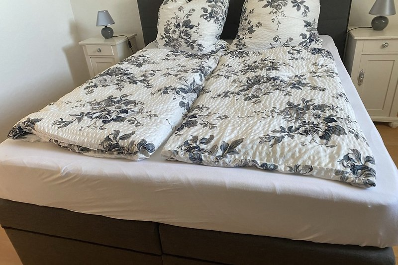
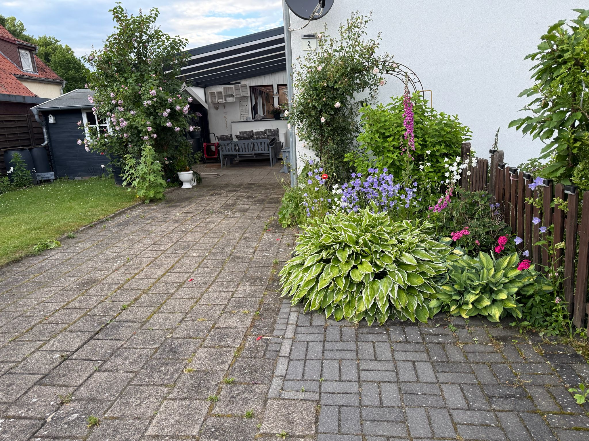
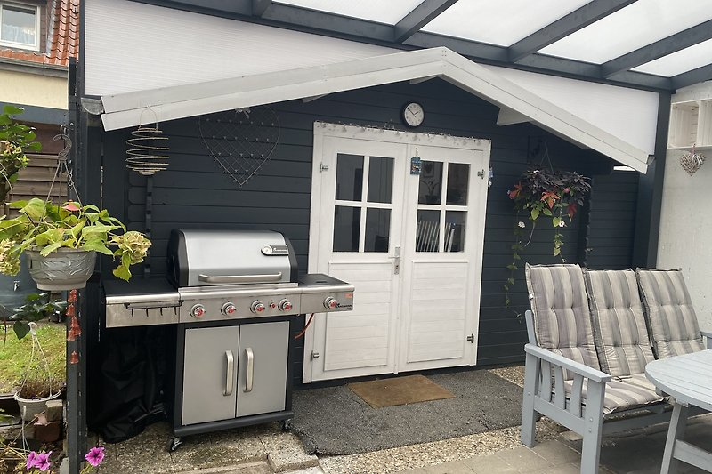

Die Unterkunft
80 m² Platz für bis zu 6 Gäste
Eine großzügige Maisonette-Wohnung mit eigenem Eingang, zwei Schlafzimmern und privatem Parkplatz in Walsrode.
Objektdaten
Die wichtigsten Fakten
Die Ferienwohnung verteilt sich über zwei Ebenen und verbindet einen gemütlichen Wohnbereich mit flexiblen Schlafmöglichkeiten für Paare und Familien.

Beschreibung
Ein Zuhause auf Zeit zum Wohlfühlen und Entspannen
Die Wohnung besticht durch ein gemütliches Ambiente und ist komplett mit hochwertigem Laminatboden ausgestattet:
Schlafzimmer 1: Ein Ruhebereich mit einem komfortablen Doppelbett, einem Babybett für die kleinsten Gäste und einem geräumigen Kleiderschrank.
Schlafzimmer 2 (Dachboden-Studio): Über eine charmante Wendeltreppe gelangen Sie in das gemütlich ausgebaute Dachgeschoss. Hier erwarten Sie zwei weitere Doppelbetten sowie ein eigener Fernseher – ideal als separater Rückzugsort.
Wohnen & Kochen
Gemütlich wohnen und gemeinsam essen
Das Wohnzimmer mit gemütlicher Sitzecke und Fernseher bietet genügend Platz, um den Abend in Ruhe ausklingen zu lassen. Alle Räume sind mit Parkett oder Laminat ausgelegt.
Das Badezimmer verfügt sowohl über eine Dusche als auch über eine Badewanne; Körperpflegeartikel und Handtücher sind ebenfalls vorhanden. In der voll ausgestatteten Küche mit allen nötigen Kochutensilien bekommt man auch im Urlaub Lust zu kochen.
Wohnzimmer mit Sitzecke und Fernseher
Voll ausgestattete Küche mit Kochutensilien
Badezimmer mit Badewanne und Dusche
WLAN und Waschmaschine

Ausstattung
Komfort drinnen und draußen
Die Ausstattung deckt die wesentlichen Bedürfnisse eines längeren Familien- oder Erholungsurlaubs ab.
Unabhängiges Ankommen und mehr Privatsphäre.
Stellplatz direkt an der Unterkunft.
Grüner Außenbereich rund um das Ferienhaus.
Geschützter Platz zum Entspannen im Freien.
Für gemütliche Stunden im Garten.
Babybett vorhanden.
Hunde und andere Vierbeiner sind bei uns herzlich willkommen.
Rauchen ist in der Wohnung nicht gestattet.

Außenbereich
Ihr privates Gartenparadies – sicher für Hund und Kind
Das absolute Highlight für alle Naturliebhaber und Hundebesitzer ist unser wunderschön angelegter, komplett eingezäunter Garten. Während Ihre Fellnase hier unbeschwert und sicher herumtollen kann, genießen Sie die Auszeit in vollen Zügen.
Machen Sie es sich in der überdachten Sitzecke bei einem ausgedehnten BBQ gemütlich oder lassen Sie in unserer gemütlichen Hängematte einfach mal die Seele baumeln.
Hunde sind bei uns ausdrücklich herzlich willkommen! Dank der unmittelbaren Nähe zum Erholungswald Eibia starten Ihre Gassi-Runden und Wanderungen quasi direkt vor der Haustür.
Freuen Sie sich auf unvergessliche Tage voller Entspannung. Wir freuen uns auf Sie und Ihre treuen Begleiter!


Lüneburger Heide
Natur, Geschichte und Freizeitziele
Haus Mara liegt im Herzen der Lüneburger Heide und ist ideal zum Radfahren und Wandern. Die Naherholungsgebiete Eibia und Wisselshorst gehören zu den waldreichsten Gebieten im Landkreis und liegen in der Gemeinde Bomlitz.
Die Eibia ist Landschaftsschutzgebiet und hat vieles zu bieten: Hügelgräber aus der Jungsteinzeit, die Borger Burg aus dem frühen Mittelalter und die historische Cordinger Mühle. Der Schriftsteller Arno Schmidt lebte nach dem Zweiten Weltkrieg in einem alten Gutshaus an der Mühle und schrieb dort einige seiner Werke. Informationshefte zu geführten Wanderungen liegen zur Ansicht bereit.
Schwimmbad: etwa 1 km
Weltvogelpark Walsrode: etwa 3 km
Golfplatz: etwa 4 km
Serengeti-Park Hodenhagen: etwa 15 km
Heide Park: etwa 24 km
Designer Outlet Soltau: etwa 20 km
Magic Park Verden: etwa 27 km
Snow Dome und Kartbahn: etwa 40 km
Ort & Lage
Haus Mara in Bomlitz/Benefeld
Haus Mara befindet sich in Walsrode, Ortsteil Bomlitz/Benefeld. Einkaufsmöglichkeiten, Apotheke und Verkehrsanbindungen sind schnell erreichbar.
Etwa 100 Meter entfernt.
Etwa 700 Meter entfernt.
Nur etwa 30 Meter entfernt.
Etwa 49 km entfernt.
Etwa 8 km entfernt.
Etwa 9 km entfernt.
Etwa 9 km entfernt.
In unmittelbarer Nähe.